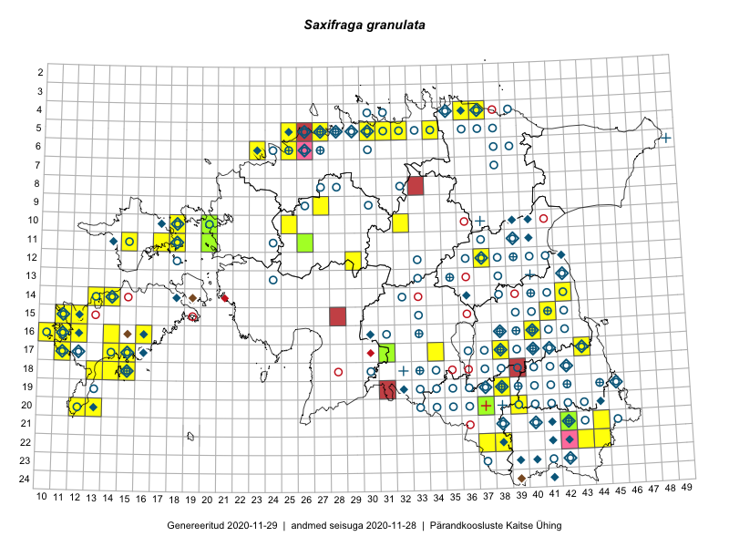

Saxifraga granulata — harilik kivirik
Kaardile koondatud taksonid: Saxifraga granulata L. (76)

Kaart põhineb 76 kirjel, neist:
vaatlusi 69
eksemplare 7
Kaasaegsed1 leiukohad asuvad 47 ruudus.
Andmed “Eesti taimede levikuatlasest”,2 sulgudes ruutude arv:3
● 1971–2005 (65)
○ 1921–1970 (90)
△ kuni 1920 (1)
+ hävinud (0)
? kaheldav (0)
Lisaruudud teistest andmebaasidest:4
ELF: 2006– . . . (0)
PKÜ: 2006– . . . (1)
ELF: 1971–2005 (0)
PKÜ: 1997–2005 (9)
| Ruut | Vaatleja(d) | Vaatlusaeg | Kirje PlutoFis |
|---|---|---|---|
| 14-42 | Peedu Saar, Ott Luuk | 2015-06-21 | ruut/ala: Saxifraga granulata L. |
| 05-30 | Rein Kalamees, Kersti Püssa | 2015-05-27 | ruut/ala: Saxifraga granulata L. |
| 16-12 | Toomas Kukk, Mari Reitalu | 2014-06-20 | ruut/ala: Saxifraga granulata L. |
| 04-37 | Rein Kalamees, Kersti Püssa | 2015-05-31 | ruut/ala: Saxifraga granulata L. |
| 18-15 | Ott Luuk, Elle Roosaluste, Jaak-Albert Metsoja | 2015-06-16 | ruut/ala: Saxifraga granulata L. |
| 17-31 | Ott Luuk, Hannes Pehlak | 2015-06-11 | ruut/ala: Saxifraga granulata L. |
| 15-41 | Thea Kull | 2015-06-21 | ruut/ala: Saxifraga granulata L. |
| 16-11 | Mari Reitalu | 2015-05-22 | ruut/ala: Saxifraga granulata L. |
| 15-11 | Mari Reitalu, Triin Reitalu | 2015-04-25 | ruut/ala: Saxifraga granulata L. |
| 15-12 | Mari Reitalu, Triin Reitalu | 2015-05-24 | ruut/ala: Saxifraga granulata L. |
| 17-14 | Mari Reitalu, Sirje Azarov | 2015-05-09 | ruut/ala: Saxifraga granulata L. |
| 20-13 | Mari Reitalu, Oliver Parrest | 2015-05-26 | ruut/ala: Saxifraga granulata L. |
| 16-12 | Mari Reitalu | 2015-07-27 | ruut/ala: Saxifraga granulata L. |
| 16-12 | Mari Reitalu | 2015-06-10 | ruut/ala: Saxifraga granulata L. |
| 17-34 | Maria Abakumova, Helle Mäemets | 2015-05-27 | ruut/ala: Saxifraga granulata L. |
| 14-13 | Mari Reitalu, Oliver Parrest | 2015-05-14 | ruut/ala: Saxifraga granulata L. |
| 18-14 | Oliver Parrest | 2015-05-23 | ruut/ala: Saxifraga granulata L. |
| 18-15 | Oliver Parrest | 2015-05-23 | ruut/ala: Saxifraga granulata L. |
| 20-12 | Triin Reitalu, Sirje Azarov | 2015-05-30 | ruut/ala: Saxifraga granulata L. |
| 18-13 | Mari Reitalu, Oliver Parrest | 2015-05-27 | ruut/ala: Saxifraga granulata L. |
| 16-11 | Mari Reitalu, Triin Reitalu | 2015-05-28 | ruut/ala: Saxifraga granulata L. |
| 15-12 | Mari Reitalu, Triin Reitalu | 2015-04-25 | ruut/ala: Saxifraga granulata L. |
| 16-10 | Sirje Azarov, Mari Reitalu | 2015-05-22 | ruut/ala: Saxifraga granulata L. |
| 17-11 | Mari Reitalu, Triin Reitalu | 2015-05-19 | ruut/ala: Saxifraga granulata L. |
| 16-11 | Sirje Azarov, Mari Reitalu | 2015-05-23 | ruut/ala: Saxifraga granulata L. |
| 16-12 | Mari Reitalu, Triin Reitalu | 2015-04-30 | ruut/ala: Saxifraga granulata L. |
| 10-25 | Aat Sarv | 2015-07-21 | ruut/ala: Saxifraga granulata L. |
| 11-18 | Meeli Mesipuu | 2015-05-15 | ruut/ala: Saxifraga granulata L. |
| 20-37 | Kaili Kattai | 2015-05-26 | ruut/ala: Saxifraga granulata L. |
| 11-18 | Meeli Mesipuu, Timo Luhamäe | 2015-05-26 | ruut/ala: Saxifraga granulata L. |
| 05-25 | Mari Metsoja, Jaak-Albert Metsoja | 2015-05-30 | ruut/ala: Saxifraga granulata L. |
| 06-23 | Mari Metsoja, Jaak-Albert Metsoja, Ott Luuk | 2015-06-04 | ruut/ala: Saxifraga granulata L. |
| 06-23 | Jaak-Albert Metsoja, Mari Metsoja, Ott Luuk | 2015-06-05 | ruut/ala: Saxifraga granulata L. |
| 22-37 | Kaili Kattai | 2015-05-31 | ruut/ala: Saxifraga granulata L. |
| 11-26 | Thea Kull, Meeli Mesipuu, Eerik Leibak | 2014-06-11 | ruut/ala: Saxifraga granulata L. |
| 09-27 | Aat Sarv | 2015-05-15 | ruut/ala: Saxifraga granulata L. |
| 10-18 | Uku Paal | 2016-05-19 | ruut/ala: Saxifraga granulata L. |
| 19-38 | Meeli Mesipuu, Timo Luhamäe | 2016-06-13 | ruut/ala: Saxifraga granulata L. |
| 22-43 | Toomas Kukk, Tiit Hallikma, Johannes Kõdar | 2016-06-15 | ruut/ala: Saxifraga granulata L. |
| 16-16 | Meeli Mesipuu | 2016-09-24 | ruut/ala: Saxifraga granulata L. |
| 17-15 | Mari Reitalu, Sirje Azarov | 2016-05-19 | ruut/ala: Saxifraga granulata L. |
| 22-44 | Jaak-Albert Metsoja, Mari Metsoja | 2016-06-15 | ruut/ala: Saxifraga granulata L. |
| 18-13 | Mari Reitalu | 2008-05-21 | ruut/ala: Saxifraga granulata L. |
| 17-14 | Mari Reitalu | 2008-05-29 | ruut/ala: Saxifraga granulata L. |
| 20-13 | Mari Reitalu | 2006-05-27 | ruut/ala: Saxifraga granulata L. |
| 18-13 | Mari Reitalu | 2008-05-21 | ruut/ala: Saxifraga granulata L. |
| 20-39 | Ilmar Uibopuu | 2017-07-21 | ruut/ala: Saxifraga granulata L. |
| 21-44 | Meeli Mesipuu | 2017-07-17 | ruut/ala: Saxifraga granulata L. |
| 12-29 | Tiit Hallikma, Indrek Tammekänd, Toomas Kukk | 2015-06-09 | punkt: Saxifraga granulata L. |
| 16-12 | Toomas Kukk, Mari Reitalu | 2014-06-20 | punkt: Saxifraga granulata L. |
| 14-42 | Ott Luuk, Peedu Saar | 2015-06-21 | punkt: Saxifraga granulata L. |
| 11-18 | Meeli Mesipuu, Timo Luhamäe | 2016-05-28 | punkt: Saxifraga granulata L. |
| 14-14 | Meeli Mesipuu | 2016-05-05 | punkt: Saxifraga granulata L. |
| 15-12 | Meeli Mesipuu, Tiiu Kull | 2016-05-27 | punkt: Saxifraga granulata L. |
| 11-18 | Timo Luhamäe, Meeli Mesipuu | 2015-05-26 | punkt: Saxifraga granulata L. |
| 10-32 | Ott Luuk | 2016-06-04 | punkt: Saxifraga granulata L. |
| 11-15 | Sander Laherand | 2017-06-03 | punkt: Saxifraga granulata L. |
| 11-15 | Sander Laherand | 2017-06-23 | punkt: Saxifraga granulata L. |
| 16-14 | Toomas Kukk, Ilmar Uibopuu, Mari Reitalu | 2018-05-28 | ruut/ala: Saxifraga granulata L. |
| 15-11 | Toomas Kukk, Ilmar Uibopuu, Mari Reitalu | 2018-05-28 | punkt: Saxifraga granulata L. |
| 15-11 | Toomas Kukk, Ilmar Uibopuu, Mari Reitalu | 2018-05-28 | punkt: Saxifraga granulata L. |
| 16-14 | Toomas Kukk, Ilmar Uibopuu, Mari Reitalu | 2018-05-28 | punkt: Saxifraga granulata L. |
| 15-12 | Peedu Saar | 2019-05-15 | ruut/ala: Saxifraga granulata L. |
| 11-17 | Peedu Saar | 2019-05-20 | punkt: Saxifraga granulata L. |
| 11-17 | Peedu Saar | 2019-05-20 | punkt: Saxifraga granulata L. |
| 16-40 | Ott Luuk | 2019-05-24 | punkt: Saxifraga granulata L. |
| 17-43 | Peedu Saar | 2019-06-07 | punkt: Saxifraga granulata L. |
| 05-27 | Ranno Puumets | 2019-06-06 | ruut/ala: Saxifraga granulata L. |
| 17-14 | Toomas Kukk, Peedu Saar, Ott Luuk | 2019-05-14 | punkt: Saxifraga granulata L. |
| 11-20 | Uve Ramst | 2007-05-19 | TAM0014778: Saxifraga granulata L. |
| 10-20 | Ott Luuk | 2014-05-24 | TAA0116641: Saxifraga granulata L. |
| 11-26 | Thea Kull | 2014-06-11 | TAA0113801: Saxifraga granulata L. |
| 11-26 | Thea Kull | 2014-06-11 | TAA0113802: Saxifraga granulata L. |
| 20-37 | Kaili Kattai | 2015-05-30 | TAA0132729: Saxifraga granulata L. |
| 21-42 | Aiki Jõgeva | 2017-07-10 | TU284321: Saxifraga granulata L. |
| 17-31 | Ott Luuk, Hannes Pehlak | 2015-06-11 | TAA0145852: Saxifraga granulata L. |
Kaasaegsed leiukohad (tähistatud värvitud ruutudega) põhinevad peamiselt 2014–2019 välitööandmetel. Väiksemal määral on andmebaasi kantud vanemaid leiuandmeid aastatest 2006–2013.↩︎
Kukk, T., Kull, T., Eesti taimede levikuatlas. Eesti Maaülikool, Põllumajandus- ja Keskkonnainstituut, Tartu, 2005.↩︎
NB! 2005. aasta atlase andmestikus katavad uuemad leiud vanemaid. Näiteks kui liik on ruudus registreeritud 1971–2005, siis pole võimalik öelda, kas ta oli sellest ruudust teada ka enne 1970. aastat. Vana atlase andmetel hävinud ja kaheldavaid leiukohti pole hilisemate (taas)leidude põhjal korrigeeritud.↩︎
Eestimaa Looduse Fondi (ELF) ja Pärandkoosluste Kaitse Ühingu (PKÜ) andmebaasid sisaldavad inventeeritud koosluste kirjeldusi ja liigiloendeid. Neist andmekogudest on kaardile lisatud lisatud vaid need ruudud, millest uue atlase andmekogus taksoni kohta kirjeid veel pole. Kõrvale on jäetud teadaolevalt kaheldavad määrangud. Kaartidel katavad uuema perioodi andmed vanemaid, PKÜ omad ELFi omi. Kattumise tõttu võib kaardil näha olla vähem mingi kategooria ruute kui legendis olev arv näitab. ELFi ja PKÜ andmed ei kajastu hetkel vaatluste tabelis ega ruutude liigiloendites.↩︎